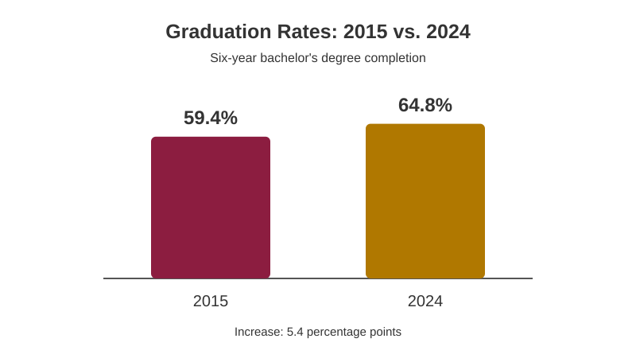

D1 · Story Frame
This story looks at how six-year graduation rates have changed at four-year colleges in the United States. The goal is to see whether more students are completing their bachelor's degrees over time.
Source: National Center for Education Statistics (NCES). The data measures the percentage of first-time, full-time bachelor's degree students who graduate from their starting institution within six years.
D2 · Editorial Figures


D3 · Accessible Data Table
| Reporting Year | Graduation Rate | Change from Previous Year | Change Since 2015 |
|---|---|---|---|
| 2015 | 59.4% | — | 0.0 pp |
| 2016 | 59.7% | +0.3 pp | +0.3 pp |
| 2017 | 60.4% | +0.7 pp | +1.0 pp |
| 2018 | 62.4% | +2.0 pp | +3.0 pp |
| 2019 | 63.4% | +1.0 pp | +4.0 pp |
| 2020 | 64.0% | +0.6 pp | +4.6 pp |
| 2021 | 64.6% | +0.6 pp | +5.2 pp |
| 2022 | 64.6% | 0.0 pp | +5.2 pp |
| 2023 | 64.6% | 0.0 pp | +5.2 pp |
| 2024 | 64.8% | +0.2 pp | +5.4 pp |
Source: NCES, IPEDS Graduation Rates, reporting years 2015–2024. Percentage-point changes were calculated by subtracting the previous year's rate and the 2015 rate from each year's graduation rate. "pp" means percentage points.
D4 · Responsive SVG
The six-year graduation rate increased by 5.4 percentage points between 2015 and 2024.
Source: NCES, IPEDS Graduation Rates, 2015–2024. Bar lengths represent graduation percentages on a scale from 0% to 100%.
Sources and Documentation
This project uses graduation-rate data from the National Center for Education Statistics (NCES).